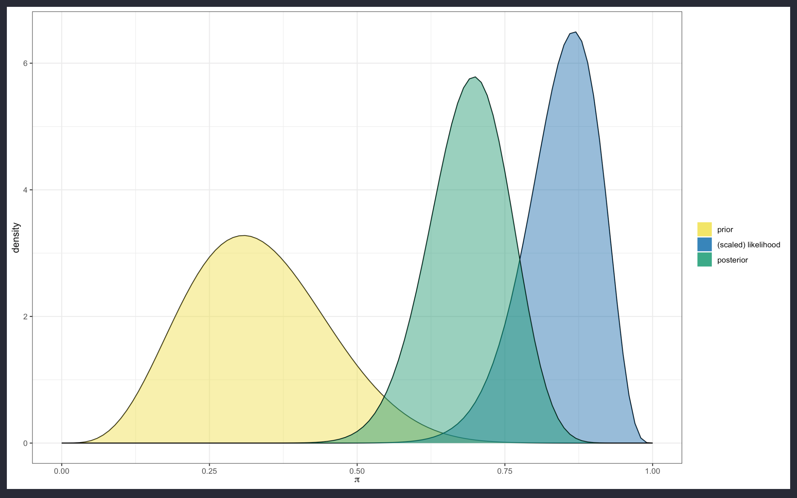

library(tidyverse)
library("brms")
library("rstanarm")
library("rethinking")
library("MCMCglmm") Bayesian Statistics model comparison
rstats
modeling
bayesian
Bayesian statistics tutorial in R comparing model packages, prior distributions, likelihoods, and posterior inference.
Overview
In this post I’ll go through some differences between Bayesian statistical packages in R. Bayesian statistics involves probabilities. This means that the probability of an event to occur is considered in the modeling procedure, and is mainly used in for making inferences, and can be used for an analysis of the speculation of the root cause of a phenomenon under the term of causal inference.

In more details, when Bayesian statistics is performed, the response variable is tested against (causal) predictors with the application of suited prior distributions, and the use of the likelihood function, to finally produce a posterior distribution which should be as much as possible close to the real future outcome of the response variable distribution.
The prior distribution is the starting point; it is the probability distribution on which the future outcome is linked to, such as the probability to have a Girl given the probability to have had a Boy.
\[P( \text{ Girl } | \text{ Boy })\]
The probability to have had a Boy is the prior, while the conditional probability to have a Girl is the posterior.
Briefly, here is a comparison between different R packages that use Bayesian inference for the calculation of the model probability distribution of the posterior.
The Stan model engine, for model replication and prediction is used in conjunction with the Montecarlo simulation technique for the best model solution. The Stan model engine is applied in the following packages:
- brms
- rstanarm
- rethinking
- MCMCglmm
All of these packages adapt and adjust different model options for a modeling procedure which is the result of the best combination of efficiency to increase productivity and effectiveness, to identify and remove unnecessary steps, automate repetitive tasks, and utilize the most suitable software tools.
This is the original source code that I have updated: https://www.jstatsoft.org/article/view/v080i01
A wide range of distributions and link functions are supported, allowing users to fit - among others - linear, robust linear, binomial, Poisson, survival, ordinal, zero-inflated, hurdle, and even non-linear models all in a multilevel context. (The Brms package)
Loading required packages
Helper function to better compute the effective sample size
eff_size <- function(x) {
if (is(x, "brmsfit")) {
samples <- as.data.frame(x$fit)
} else if (is(x, "stanreg")) {
samples <- as.data.frame(x$stanfit)
} else if (is(x, "ulam")) {
samples <- as.data.frame(x@stanfit)
} else if (is(x, "stanfit")) {
samples <- as.data.frame(x)
} else if (is(x, "MCMCglmm")) {
samples <- cbind(x$Sol, x$VCV)
} else {
stop("invalid input")
}
# call an internal function of rstan
floor(apply(samples, MARGIN = 2, FUN = rstan:::ess_rfun))
}Compare efficiency between packages
# only used for Stan packages
iter <- 6000
warmup <- 1000
chains <- 1
adapt_delta <- 0.8
# only used for MCMCglmm
nitt <- 35000
burnin <- 10000
thin <- 5
# leads to 5000 posterior samplesDyestuff
brms
prior_dye_brms <- c(set_prior("normal(0, 2000)", class = "Intercept"),
set_prior("cauchy(0, 50)", class = "sd"),
set_prior("cauchy(0, 50)", class = "sigma"))
dye_brms <- brm(Yield ~ 1 + (1 | Batch),
data = lme4::Dyestuff,
prior = prior_dye_brms,
chains = 0)
time_dye_brms <- system.time(capture.output(
dye_brms <- update(dye_brms,
iter = iter,
warmup = warmup,
chains = chains,
control = list(adapt_delta = adapt_delta))
))
# summary(dye_brms)
eff_dye_brms <- min(eff_size(dye_brms)) / time_dye_brms[[1]]rstanarm
time_dye_rstanarm <- system.time(capture.output(
dye_rstanarm <- stan_glmer(Yield ~ 1 + (1 | Batch), data = lme4::Dyestuff,
prior_intercept = normal(0, 2000),
iter = iter, warmup = warmup, chains = chains,
adapt_delta = adapt_delta)
))
# summary(dye_rstanarm)
eff_dye_rstanarm <- min(eff_size(dye_rstanarm)) / time_dye_rstanarm[[1]]rethinking
d <- lme4::Dyestuff
dat <- list(
Yield = d$Yield,
Batch = d$Batch
)
dye_flist <- alist(
Yield ~ dnorm(eta, sigma),
eta <- a + a_Batch[Batch],
a ~ dnorm(0,2000),
a_Batch[Batch] ~ dnorm(0, sd_Batch),
sigma ~ dcauchy(0, 50),
sd_Batch ~ dcauchy(0, 50))
dye_rethinking <- ulam(dye_flist,
data = dat,
chains=1,
cores = 4,
sample = TRUE)
time_dye_rethinking <- system.time(capture.output(
dye_rethinking <- update(dye_rethinking,
iter = iter,
warmup = warmup,
chains = chains,
control = list(adapt_delta = adapt_delta))
))
# summary(dye_rethinking)
eff_dye_rethinking <- min(eff_size(dye_rethinking)) / time_dye_rethinking[[1]]MCMCglmm
time_dye_MCMCglmm <- system.time(capture.output(
dye_MCMCglmm <- MCMCglmm(Yield ~ 1,
random = ~ Batch, data = lme4::Dyestuff,
thin = thin, nitt = nitt, burnin = burnin)
))
# summary(dye_MCMCglmm)
eff_dye_MCMCglmm <- min(eff_size(dye_MCMCglmm)) / time_dye_MCMCglmm[[1]]Efficiency
print(c(brms = eff_dye_brms,
rstanarm = eff_dye_rstanarm,
rethinking = eff_dye_rethinking,
MCMCglmm = eff_dye_MCMCglmm))| brms | rstanarm | rethinking | MCMCglmm |
|---|---|---|---|
| 559.55398 | 202.97177 | 3660.71429 | 34.11514 |